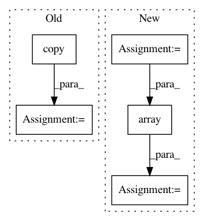

3df2eaf74d8f2299ca05e3e98cab5bf89dafc249,cnn_visualisation.py,,preprocess_image,#Any#,91
Before Change
means = [0.485, 0.456, 0.406]
stds = [0.229, 0.224, 0.225]
preprocessed_img = img.copy()[:, :, ::-1]
for i in range(3):
preprocessed_img[:, :, i] = preprocessed_img[:, :, i] - means[i]
preprocessed_img[:, :, i] = preprocessed_img[:, :, i] / stds[i]
preprocessed_img = \
np.ascontiguousarray(np.transpose(preprocessed_img, (2, 0, 1)))
preprocessed_img = torch.from_numpy(preprocessed_img)
preprocessed_img.unsqueeze_(0)
input = Variable(preprocessed_img, requires_grad=True)
return input
After Change
// Resize image
PIL_img = PIL_img.resize((224, 224), Image.ANTIALIAS)
// Convert to np array
im_as_arr = np.array(PIL_img, dtype=np.float)
// Transpose to obtain D-W-H
im_as_arr = im_as_arr.transpose(2, 0, 1)
// Normalize the channels
for channel, _ in enumerate(im_as_arr):
In pattern: SUPERPATTERN
Frequency: 3
Non-data size: 5
Instances
Project Name: utkuozbulak/pytorch-cnn-visualizations
Commit Name: 3df2eaf74d8f2299ca05e3e98cab5bf89dafc249
Time: 2017-10-24
Author: utku.ozbulak@gmail.com
File Name: cnn_visualisation.py
Class Name:
Method Name: preprocess_image
Project Name: etal/cnvkit
Commit Name: 1281963269c819f22fed98583526df8946d18b4a
Time: 2016-04-20
Author: eric.talevich@gmail.com
File Name: cnvlib/commands.py
Class Name:
Method Name: do_import_theta
Project Name: rtavenar/tslearn
Commit Name: 6ffdbc8963b6bcaf686af1a9d5b7ddf212dbfc31
Time: 2020-04-21
Author: romain.tavenard@univ-rennes2.fr
File Name: tslearn/early_classification.py
Class Name: NonMyopicEarlyClassification
Method Name: fit